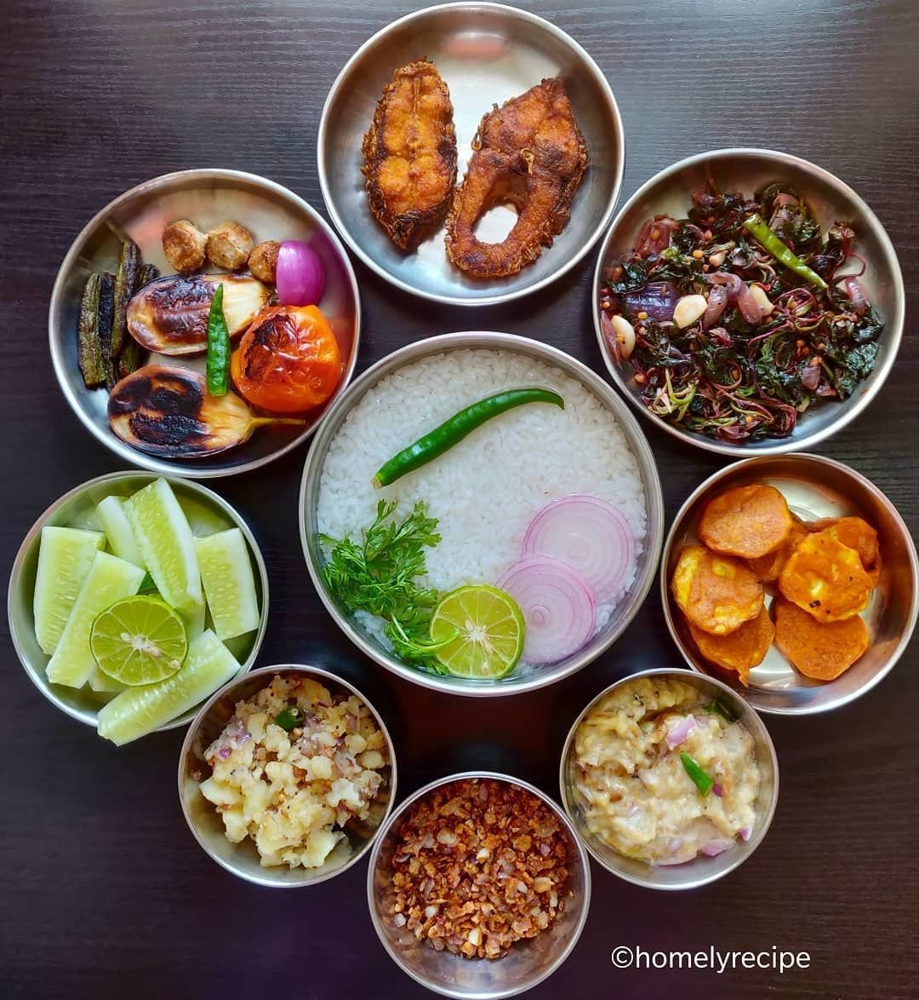

scroll-to-bottom
Pakhala-The coolest food of Odisha

Best food in summer in odisha state.
Pakhala is essentially rice which is fermented overnight with water and consumed
with an accompaniment of fried vegetables and fish. Pakhala is the food for an
Odia especially during the summers. The food is known to be a preventive for heat
stroke- which is quite prevalent in the region during the summers and some
researchers opine that it’s the only food which has vitamins for the nerve cells.
Having Pakhala by spoon is akin to having chowmein by hand!
Ingredients
- 1 cup cooked rice
- 2 cups water
- 4 tbsp curd
- To taste Salt as per taste
- 1 tsp oil
- 1/2 tsp Panchforan
- 1 pinch asaefotida
- 7-8 curry leaves
- 2 whole dry chilli
Instructions
-
For Cooking Rice
Bring water to a boil. Add washed/rinsed rice. Do not add salt as it could slow down fermentation.
Again bring to a boil on high heat and then reduce heat. Allow to simmer on low heat for about 15 minutes,
till rice is cooked through. Stir and check periodically whether water is adequate and rice does not burn.
Cooking times differ so best to check from 10 minutes onward whether rice is done. The rice should be
cooked, soft but with a bite to it and not mushy.
Strain the rice and retain the water (we will use it for making the dahi pakhala). For 1 cup of rice cooked
in 4.5 cups of water, I got about 5 cups of cooked rice after straining, and about 1 cup of strained water.
Add a cup of water, cover and set the strained rice aside to cool (for about 1 hour) at room temperature -
do not refrigerate.
- Preparation
Peel and slice ginger and mango ginger/amada (or raw green mango if using). Slice green chilies, shred curry
leaves. Pound the ginger, mango ginger and chili slices together in a mortar and pestle along with 2-3 curry
leaves.
If using a mixie/processor, crush them coarsely without making a chutney out of them. We want to retain some
texture.
- PMaking Chunka Dahi Pakhala Bhaat
Once the strained rice has cooled completely, add the coarse pounded ginger, chili and mango ginger.
Add the rice water (strained from the cooked rice). Stir
Add curd, stir.
Add sufficient water to cover about an inch more than the surface of the rice. Stir.
- PMaking Chunka/ Tudka/ Seasoning
Heat mustard oil in a small pan. Mustard oil is the traditional oil used in Odia cusine for this reicpe.
Alternatively, a mild flavoured oil like sunflower oil may be used, though it will give a different taste to
the dish.
If not using mustard oil, add mustard seeds, let them burst. (This is not required if mustard oil is used).
Add cumin seeds, saute. Add dry red chilies, saute for 30 seconds. Add curry leaves and pour the tadka/
seasoning on the prepared rice.
- PAllow Rice to Ferment
Cover the seasoned rice and allow it to ferment at room temperature overnight or for at least 10 hours.
- After Fermentation
Once the time for fermentation has been completed, add salt and stir it in. I used 1 teaspoon, but you may
like to check the seasoning first with ½ teaspoon, and then add a little more if required.
Squeeze slices of Gondhoraj Lebu (or regular lemon if using) over the Bhaat, and drop the used slices too
into the dish.
The Chunka dahi pakhala is now ready.
Pakhala is served with a variety of Odia dishes such as fried or dry fish or shrimp or other sea food, bhaja
(fried vegetables), saaga (sauteed greens), aloo poda (mashed seasoned potato), badi chura (fried badi/ sun
dried lentil rounds, crumbled and mixed with onion, green chili) along with lemon, raw onion and green
chili.
Nutrition:
| Serving |
2 cups |
| Calories |
304kcal |
| Carbohydrates |
60g |
Back to top
Home Page
Next page